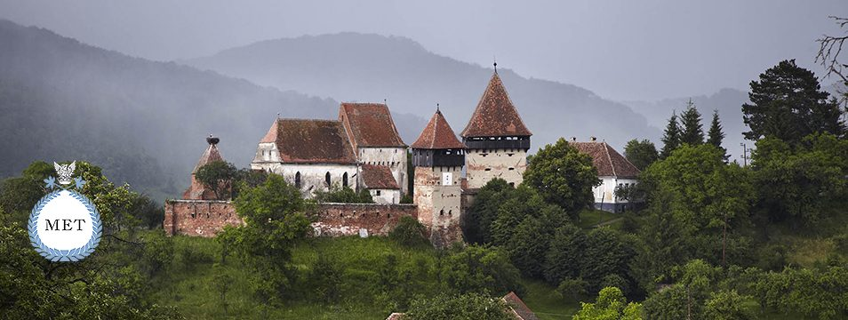
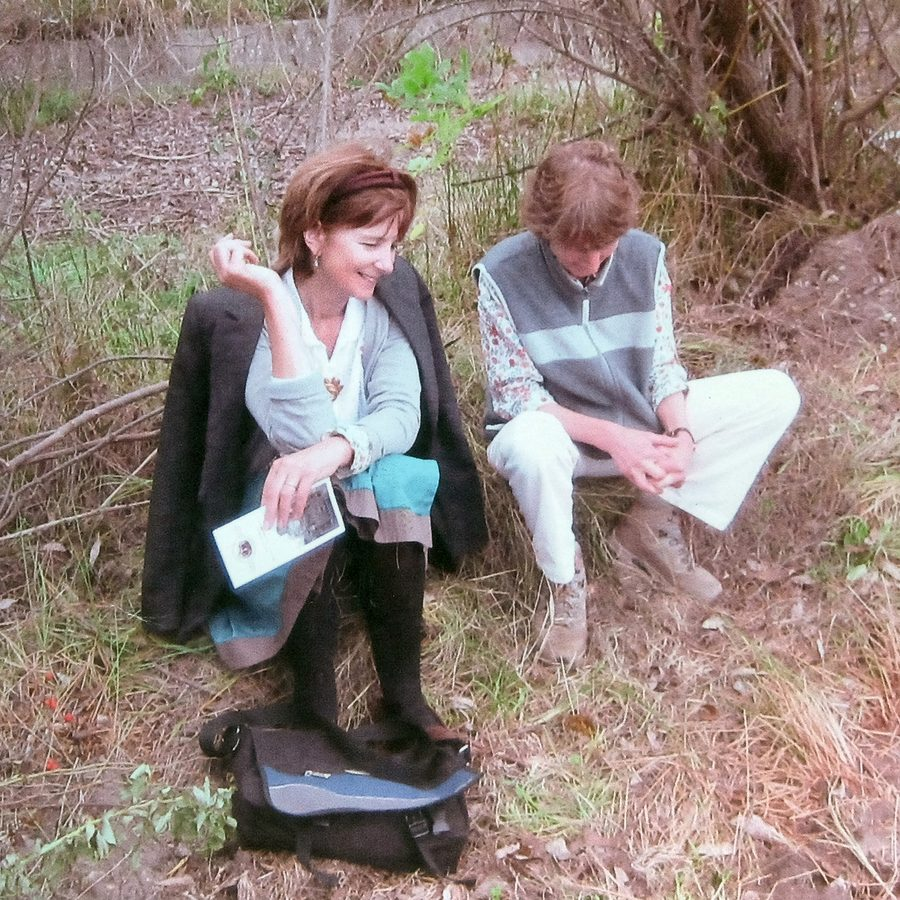
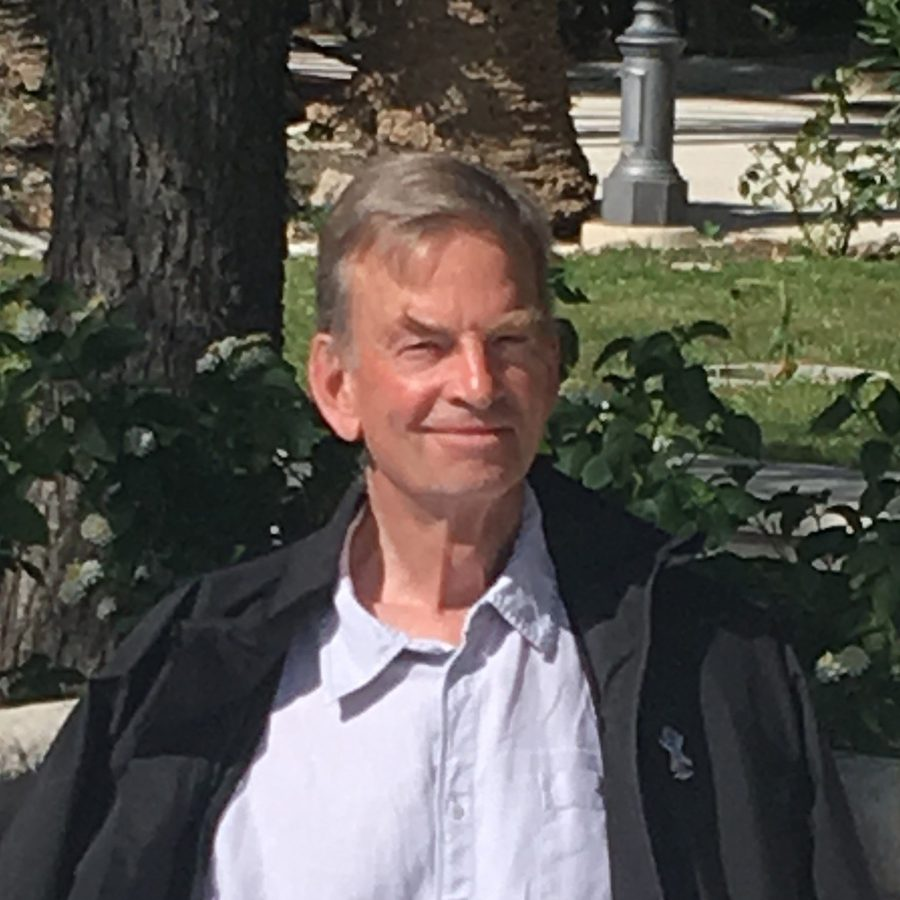
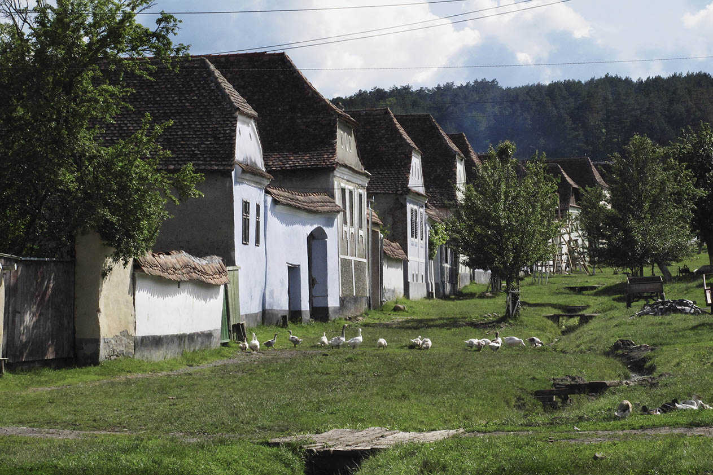
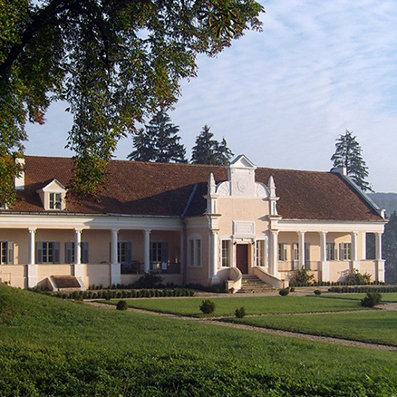
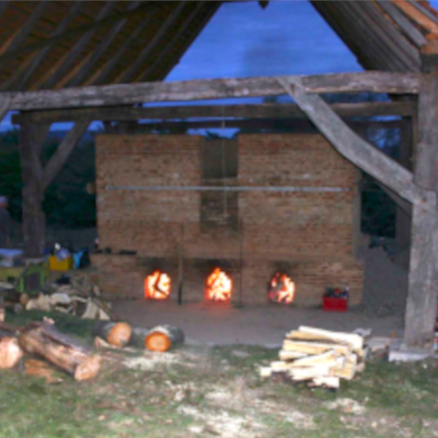
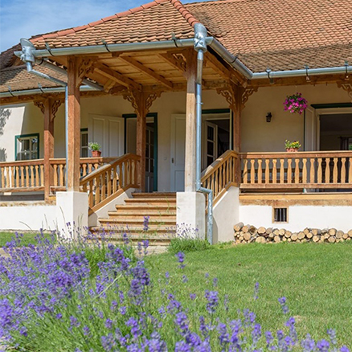
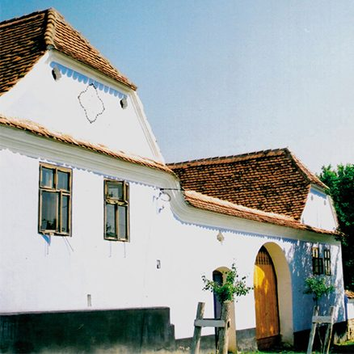

Our Goal
After a prolonged mass exodus of Saxons from Transylvania, in 1993 the MET set about highlighting the precious heritage which was under threat and embarked on saving and restoring abandoned buildings, farms and fortified churches. The objectives were simple:
- To re-train local craftsmen with the necessary skills to repair and renovate the unique buildings;
- To broaden the philosophy into what we call ‘The Whole Village Project', supporting the development of all aspects of village life and agriculture, while safeguarding the underlying principles of conservation;
- To help the Villagers set up their own businesses and guesthouses.
About Us

Jessica Douglas-Home and Mary Walsh
Jessica Douglas-Home
Chairman
Artist and writer. She was a Trustee of the Jan Hus Foundation in Czechoslovakia (known as the Underground University) to help persecuted academics before the fall of the Berlin wall by smuggling in books and journals so that the dissidents could keep abreast of their subjects. She then co-founded three more in Slovakia, Poland, and Hungary - and finally the Mihai Eminescu Trust in Romania under the auspices of President Ceausescu’s dictatorship.
Mary Walsh
Trustee
Mary Walsh has worked in the Balkans since the late 1980s. She was a founder member of the British wing of the international Campaign for the Protection of Romanian Villages in 1988 (also known as Operation Romanian Villages), and found the first village in Britain, Welsh Newton in Herefordshire, to twin with Jedu in northern Romania. From January 1990 she drove trucks of humanitarian aid, medicines, books and writing materials to twinned villages in Romania and numerous times throughout the war to Bosnia and Croatia. She has also worked as an independent election observer in the former Soviet Union and Balkans. She became a trustee of the Mihai Eminescu Trust in 1992.
Sir Noel Malcolm
Trustee
Senior Research Fellow at All Souls College, Oxford, and a Fellow of the British Academy. His many publications on the history and culture of south-eastern Europe include George Enescu: His Life and Music (1990). This was the first study in English of the great Romanian composer, based on research carried out in Bucharest in the early 1980s. He was a founding Trustee of the Mihai Eminescu Trust in 1986 and travelled to Romania to help the dissidents, three years before the fall of the Berlin Wall.

Jeremy Amos
Trustee
Architect. He has a specialised practice where all projects are personally handled. Amos has a long experience of attending to requirements of private clients. He engages in restoring and building and designing gardens for them both in England and in Europe. He has been a Trustee of the Mihai Eminescu Trust since 1992 He is also a founder of the Horizon Foundation in Holland which supports threatened cultural heritage and identity as well as educational and social initiatives, in Latin America, Russia, Georgia, Bulgaria, Romania, The Balkans, Turkey, Namibia as well as in Germany, Italy and the United Kingdom.
Origins of the trust
The past and the future
Are two sides of one page;
He who learns them will discover
A beginning's found at the end of an age.
Mihai Eminescu (1850 - 1889)

The Mihai Eminescu Trust was formed during Ceaușescu’s dictatorship, to help persecuted dissident academics by smuggling in books and journals so that they could keep abreast with the civilisation they had once shared. Our clandestine contacts took us to strange places. In 1987 I visited the lonely mountain hut of Constantin Noica, a much-revered sage who told me the ancient villages around him were facing the imminent threat of “systematisation”—obliteration by bulldozing—to make room for factories and concrete apartment blocks.
In response...
Comments from our supporters
Simon Jenkins
Chairman of the National Trust (2008-2014)
An internationally recognised authority on architectural matters, he visited Transylvania in October 2009. On his return he made a note to the National Trust staff which is worth repetition, as it shows a great understanding of the character of our work from the perspective of an outside observer.
I visited the MET's offices in Sighisoara, Viscri and Malancav and numerous projects in about a dozen locations. Having seen countless such international operations...
Patrons (Past and Present)
Our key benefactors have been the Packard Humanities Institute and the Horizon Foundation. We owe them our deepest thanks for their unfailing commitment to our goals and their great generosity in helping us to achieve them.
We also thank:
HRH Prince of Wales
Jon Moynihan
the Headley Trust
the Planet Foundation
the Irish Tree Society
Lord Leach
Lord Rothschild
Michael Heathcoat Amory
Lazards
Bill Parker
Colin Richards
the Viscountess Boyd Trust
the Prodan Romanian Cultural Foundation
the Romanian Cultural Institute
the Foundation for Partnership
the Manfred Hermsen Stiftung
the German World Heritage Foundation
Citibank
Accor
the Lisbet Rausing Charitable Foundation
Primrose and Christopher Arnander
the Rufford Maurice Laing Foundation
the EEA and the EU’s Culture 2000 programme
Contributors to our work
Lucy Abel-Smith
John Akeroyd
Francine Belaerts
William Blacker
Mihai Blotor
Ilinca Bossy
Silvia Demeter
Richard Cundall
Gerhild Dootz
Sara Dootz
Richard Eeles
Walter Fernolend
François Feuillat
Steve Finney
Catherine Fitzgerald
Philip Gaches
Andreea Gavriliu
Cristian Gherghiceanu
Anthea Gibson
Anthony Goode
Edmund Handy
Lucica Harbădă
Romulus Harbădă
Tibor Hartel
Charles Keen
Fritz Klusch
Martin Knall
Ernst Linzing
David Mallinson
Roxanna McDonald
David Mlinaric
Owen Mountford
Alexandru Neagu
Kinga Öllerer
George Peterken
Ian Pritchett
Ștefan Șancu
Ioan Suciu
Marianne Suhr
Wili Tartler
Helmut Wagner
Michael Wagner
Martin Werner
Vanessa Williams-Ellis
Our Sister Organisation in Romania
Since 2019, we have handed over full responsibility and executive authority for the running of the Trust to our Romanian colleagues under the directorship of Caroline Fernolend and her trustees.
MET UK remains an active partner, providing help and advice when required, fundraising, and giving donations for special projects.
Projects


Other Projects
Selected Guesthouses

119 Richis

63 Viscri

Publications
See allEvents
Notable events
Apafi Manor the setting for award winning film "Malmkrog"
1st March 2020

At this year's Berlin International Film Festival, the award for Best Director in the Encounters Competition went to Cristi Puiu for his film "Malmkrog". The film is based on a text by Russian philosopher Vladimir Solovyov and is described as a global journey through history, a tour de force of thought. It was entirely shot in and around the Apafi Manor.
After filming had completed the Manor's library was left in a state of disarray. We are truly grateful to ...
Explore the news archive:
Get in touch
-
England
The Secretary MET
15 Clarendon Rd
London W11 4JB
-
Romania
10 Cojocarilor Street
Sighisoara 545400, Jud. Mures -
Email
admin@mihaieminescutrust.org -
Phone
+40 (0)265 506024